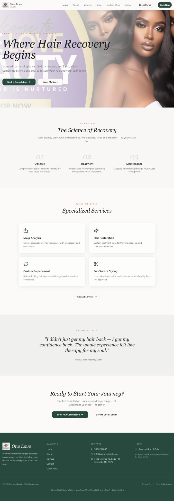

The challenge

← Back to Work
Beauty · Booking
One Love Beauty
Booking should feel like the conclusion of understanding the service, not the first thing a beauty client is forced to do.
Platform usedWix
Project typeBeauty · Booking
The story behind the build
The booking button should feel like the conclusion of the service story, not the beginning.
One Love Beauty needed a clearer route from discovering a service to feeling ready for a consultation or booking.
I used Wix to organise the service range, explain how the customer journey works and place trust close to booking decisions. That way the visitor can first understand what is available and why it may be right for them.
The finished flow connects discovery, confidence and booking instead of treating the booking button as a separate part of the website.
What I changed
- Make the service range easy to scan.
- Explain the customer journey before the booking decision.
- Place trust close to booking actions.
- Keep mobile booking access clear and consistent.
Where it ended